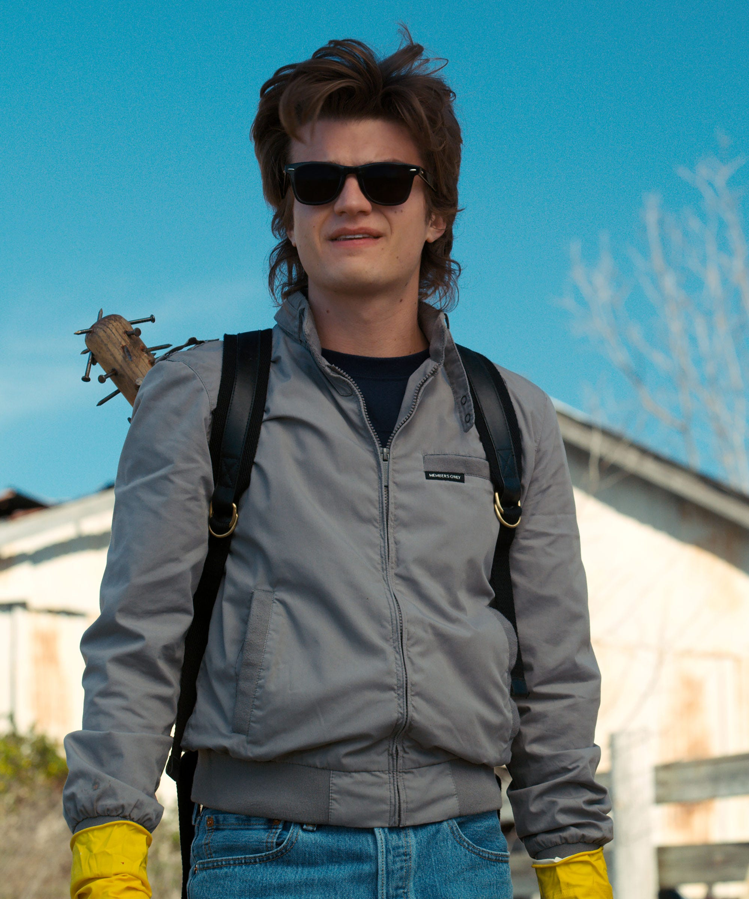
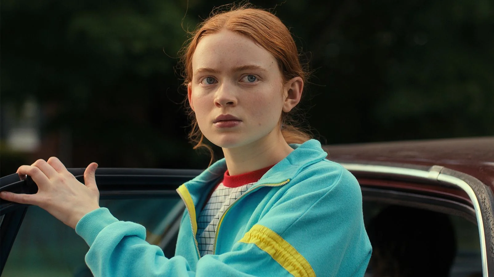
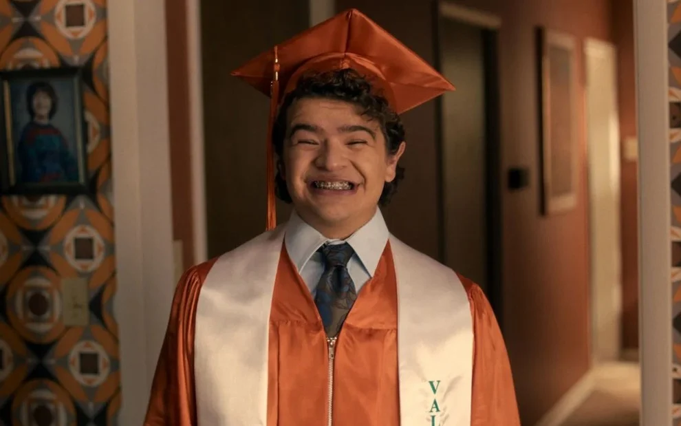

Quais são os personagens favoritos de Stranger Things?
Classificação
Personagem
1 lugar
Steve Harrington
2 lugar
Max Mayfield
3 lugar
Dustin Henderson
STEVE HARRINGTON

Steve é um dos personagens da série que mais teve um bom desenvolvimento nos decorrer das temporadas.
Na primeira temporada, ele era um dos mais odiados. O desenvolvimento dele foi tão bom que os
criadores permaneceram com ele, sendo que ele morreria no início da série.
Ele se tornou o favorito da maioria do fandom de Stranger Things.
MAX MAYFIELD

Max apareceu pela primeira vez na segunda temporada. É uma personagem já sendo amada desde do ínicio.
Na quarta temporada, ela teve mais destaque na série, aumentando positivamento a opinião sobre a
personagem. O desenvolvimento dela também foi um dos maiores apesar do trauma que ela sofre.
DUSTIN HENDERSON

O Dustin está desde o começo da série e é conhecido por ser o mais sensato do seu grupo de amigos.
Com o tempo, ele se torna o melhor amigo do Steve, formando a dupla mais querida da série. Dustin
também tem muito carisma, conquistando os fãs da série.
Veja os demais personagens principais de Stranger Things: